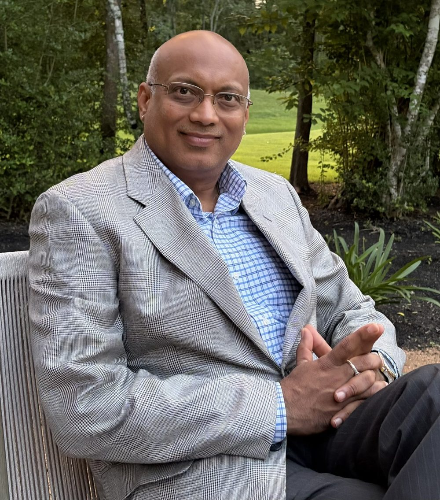
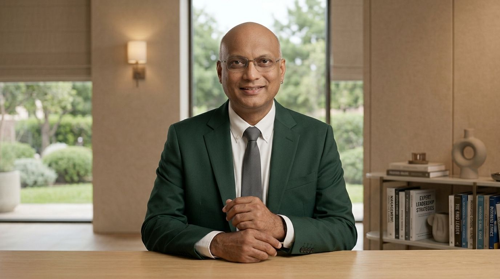
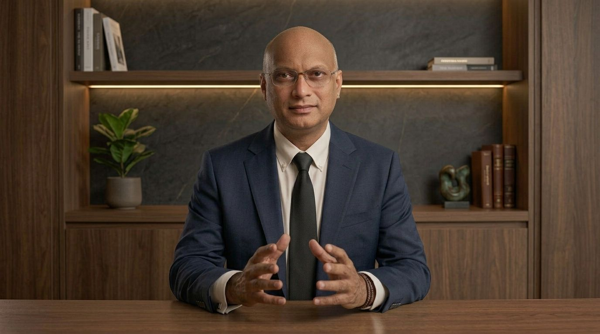
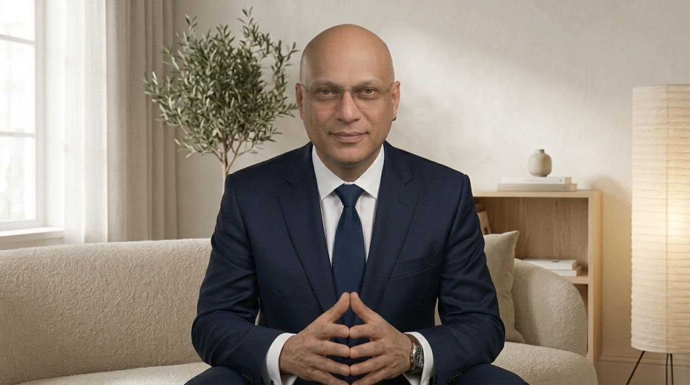
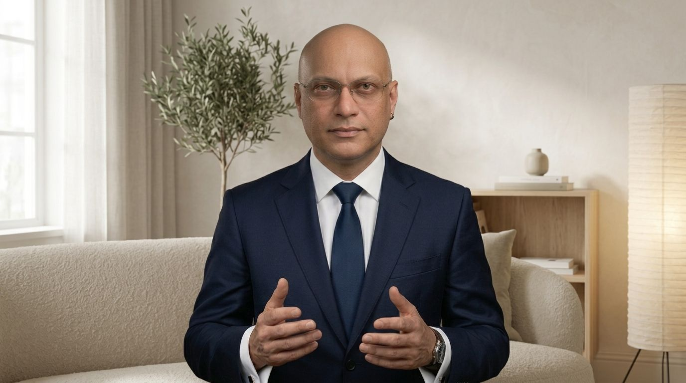
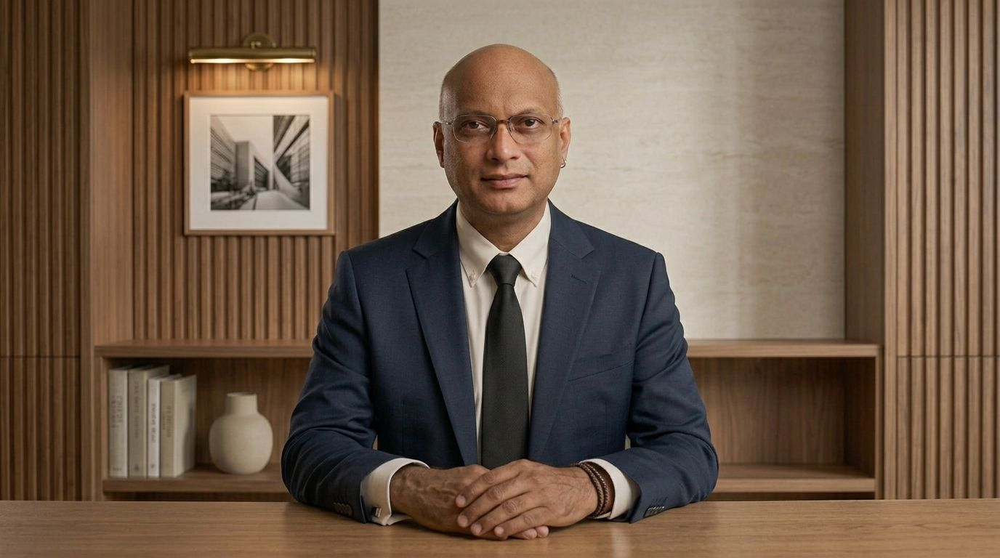
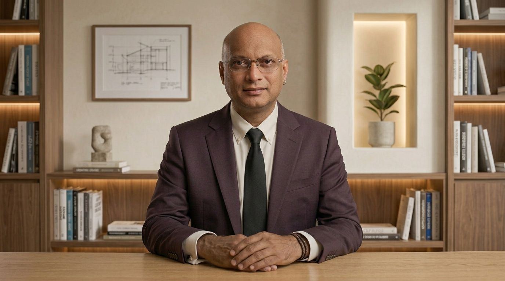
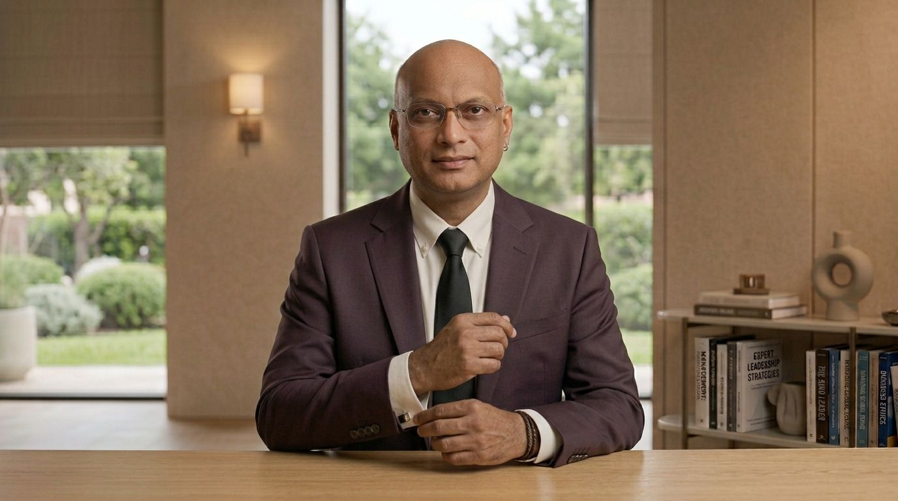
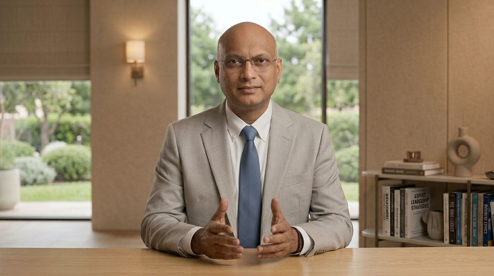
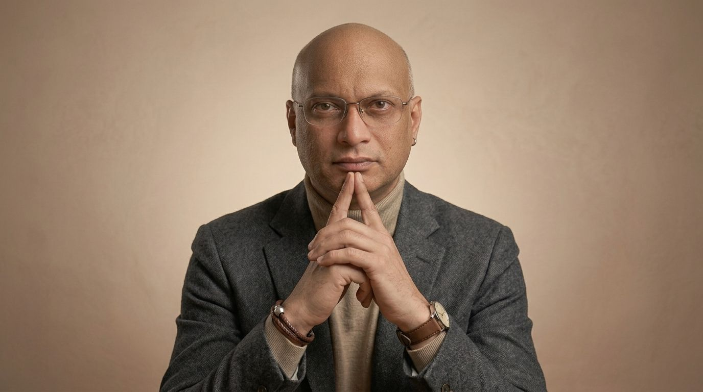

People-first Agile software delivery: a force multiplier for sustainable advantage.
I combine core engineering and computer science with behavior engineering to achieve lean delivery: focused value streams and system-optimized excellence.
I lead banking platforms with 650+ stakeholders and analytics programs with 40+ teams. Release Train Engineer, software leader, invited speaker, and yoga teacher in Plano, Texas.


From power grids to people-first delivery
I started in 1992 as an electrical engineer designing 220kV substations for Powergrid Corporation of India. Then came industrial control systems at Siemens. I was programming industrial control systems and then switched to Business Application programming with Satyam Computer Serviecs in its management Role on Mainframe software in COBOL, PL/1, DB2 and IMS, and over two decades of program leadership across insurance, banking, healthcare, retail, and automotive.
That engineering background shapes how I lead. I care about systems, flow, and evidence, and about the people doing the work. Today I lead one of USAA Bank’s largest Agile Release Trains, and I coach executives, product owners, and Scrum Masters on making scaled delivery transparent and sustainable.
I hold an MBA from the University of Melbourne and recent executive credentials from MIT Sloan and Cornell in AI, machine learning, and product management.
Who I work with
Enterprise and technology executives
Operating models, multi-year transformation roadmaps, and Lean Portfolio Management that tie investment decisions to value streams and honest delivery signals.
Program, product, and release train leaders
Coaching for RTEs, Scrum Masters, and product owners on PI planning, dependency management, flow metrics, and predictable cadence.
Conferences, universities, and communities
Talks and workshops on Agentic AI in Agile, earned value for Agile programs, hyperscaled organization design, and measuring culture change.
What I bring
- Enterprise Agile operating models
- SAFe, Scrum@Scale, LeSS
- Lean Portfolio Management
- Release Train Engineering
- Digital banking and omnichannel delivery
- Product strategy and roadmaps
- Flow metrics, KPIs, and OKRs
- Value stream mapping
- Data strategy and governance
- Risk, compliance, and controls
- Executive communication
- Agentic AI for program management
Platforms I have built on
- IBM mainframe, COBOL, DB2
- WebSphere J2EE
- Microsoft .NET
- Kafka and MQ
- Hadoop
- Snowflake and BigQuery
- AWS Lambda and Terraform
- Tableau and Power BI
- Jira, Rally, and Confluence
Journey
USAA Bank, Release Train Engineer
Lead one of the largest SAFe Agile Release Trains: 30 teams and 650+ stakeholders delivering digital banking and omnichannel experiences. Designed the enterprise Agile operating model, solution trains, governance, and metrics, and shaped the Bank Digital Mobile Strategy. Hackathon winner, including data-science banking personalization.
Toyota, Agile Transformation and Data Science Delivery
Led the Agile transformation architecture for an analytics organization of 40+ teams. Built communities of practice for RTEs and STEs, DevOps blueprints for data products, and Snowflake and BigQuery pilot frameworks.
Bank of America, Program Manager and Enterprise Agile Coach
Stood up the Agile operating model and governance for a 2,000-person mortgage servicing transformation, with Rally and Power BI reporting built for C-level decisions.
State Farm, Program Manager, Agile Coach, and Product Manager
Led data architecture, information governance, Big Data, Kafka, and MQ for insurance platforms, working with Legal, Security, and Compliance on property and home-insurance data.
Cognizant, Program Management and Enterprise Architecture
Delivered Agile and architecture programs for MetLife, Ernst & Young, BCBS of Oregon, Capital One, Disney, and American Express while leading a global team of 10.
Powergrid, Siemens, Satyam, State Farm
From power system engineer to program manager of a $15 million program. Led the application portfolio roadmap during the 2004 Balboa Insurance and Countrywide Financial merger.
Speaking
Keynotes, symposium sessions, and workshops on scaled Agile, program metrics, and Agentic AI, for executives, practitioners, and graduate students.
- 2026Agentic AI for Agile Program ManagementPMI Symposium, UT Dallas Naveen Jindal School of Management
- 2026Master the Release Train Engineer Role for Program and Portfolio ManagementPMI Dallas Chapter
- 2025Earned Value Analysis for Agile Program ManagementPMI Fall Symposium, Dallas
- 2024Hyperscaled Agile Organization Structure for Software DevelopmentPMI Symposium at UT Dallas, and the Spring PMI National Project Management Conference
- 2022Agile Culture Scores for Organization TransformationPMI and UT Dallas Naveen Jindal School of Business
- 2018 to 2020Guest Faculty on Agile Data AnalyticsSMU Cox School of Business, plus Agile for Patriots, training veterans for Agile roles (2019)
- EarlierChicago QA Association (2010), ISMA Conference (2009), IEEE Jaipur (1992)Agile for infrastructure, large-scale data migration measurement, and power grid load-flow optimization


Yoga, the other half of my practice
I completed RYT-200 and RYT-300 teacher training at the JKYog School of Yoga under Swami Mukundananda, and I keep learning through many short courses with SVYASA.
My specialty is face yoga: structured, gentle practice that supports facial tone, a fresher look, and confidence, and therapeutic facial work for people addressing clinical facial conditions alongside their care providers. The same attention to breath, pacing, and steady effort shapes how I lead teams.
- Face yoga
- RYT-200 and RYT-300, JKYog School of Yoga
- SVYASA short courses
- Private and group sessions
Credentials
Certifications
- PMP
- SAFe Practice Consultant (SPC)
- SAFe RTE
- SAFe PO/PM
- SAFe DevOps
- Certified Scrum Master
- Certified Scrum Practitioner
- LeSS Practitioner
- Enterprise Business Agility Strategist
- TOGAF 9
- ITIL v3
- AWS Certified
- CSTE
- CSQA
- LOMA Associate, INS21
Education
MBA, IT Strategy and Project Management
University of Melbourne
B.E., Electrical Engineering
Malaviya National Institute of Technology
Executive education
MIT Sloan: AI for Business and Strategy (2025)
Cornell: Product Management (2025), Web Front End Development (2025), Machine Learning (2026)
Colorado State University: Graduate Certificate in Cybersecurity (in progress)
Gallery






Let’s talk
Planning a transformation, a conference, or a class? Send a note and I will reply personally.
Based in Plano and Dallas, Texas.